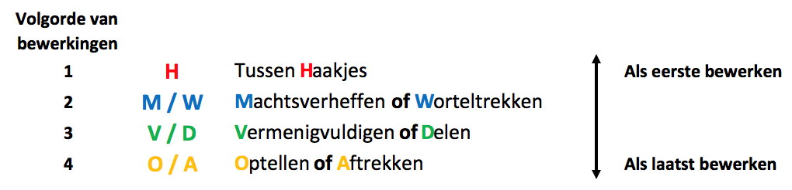
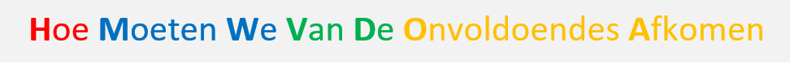
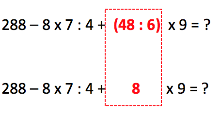
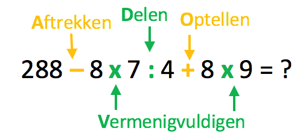
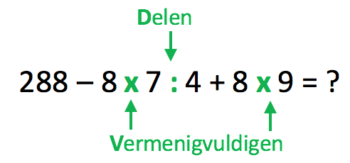
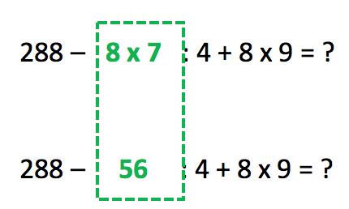
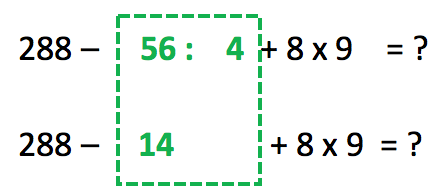
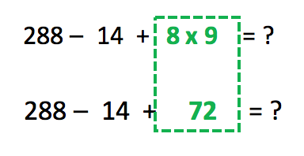
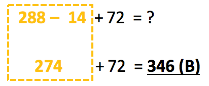

Vraag 8
Vraag
Los op: 288 – 8 x 7 : 4 + (48 : 6) x 9 = ?
A: 202
B: 346
C: 562
D: 4482
Achtergrond Informatie
Tijdens het rekenen moet je altijd in de juiste volgorde werken om het goede antwoord te krijgen.
Eigenlijk is rekenen net als je kleren aantrekken. Als je eerst je schoenen en daarna pas je sokken aatrekt dan gaat er iets niet helemaal goed!
Soms bestaat een som uit meerdere bewerkingen, zoals de volgende som:
3 + 2 x 4
In dit geval zijn er twee bewerkingen, namelijk optellen én vermenigvuldigen.
Als we gewoon van links naar rechts werken krijgen we het volgende:
Eerst:
3 + 2 = 5
En daarna:
5 x 4 = 20
Dus het antwoord dat we krijgen door van links naar rechts te werken is 20. Maar omdat dit de verkeerde volgorde is hebben we ook het verkeerde antwoord gekregen!
De juiste volgorde is eerst vermenigvuldigen, en daarna optellen. Dus:
Eerst:
2 x 4 = 8
En daarna:
3 x 8 = 24
Het juiste antwoord is dus 24.
Bij het oplossen van een rekensom is de volgorde altijd hetzelfde:

- Eerst de haakjes wegwerken.
- Daarna machtsverheffen en worteltrekken van links naar rechts.
- Daarna vermenigvuldigen en delen van links naar rechts.
- Als laatste optellen en aftrekken van links naar rechts.
Om deze volgorde makkelijk te kunnen onthouden kan je de voldende zin gebruiken:

Oplossing
De vraag is: los de som 288 – 8 x 7 : 4 + (48 : 6) x 9 op in de juiste volgorde.
Stap 1: haakjes
Om te beginnen moeten we eerst de haakjes wegwerken:

De som bestaat nu uit de volgende bewerkingen:

Stap 2: vermenigvuldigen en delen
In de volgende stap, gaan we eerst vermenigvuldigen en delen, want vermenigvuldigen en delen hebben voorrang op optellen en aftrekken.

Vermenigvuldigen en delen doen we altijd van links naar rechts. Dus we beginnen links bij de eerste verminigvuldiging:

Vervolgens werken we naar rechts, waar de volgende bewerking een deling is:

Daarna doen we de laatste vermenigvuldiging:

Stap 2: optellen en aftrekken
De overige bewerkingen zijn alleen nog maar optellen en aftrekken. Ook dit doen we weer van links naar rechts:

Het antwoord is dus 346, het juiste antwoord is B